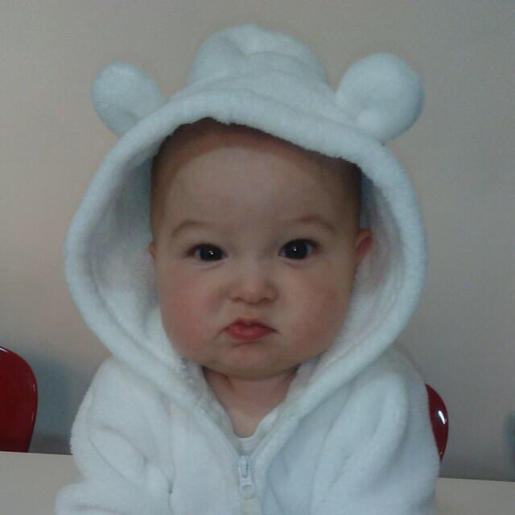
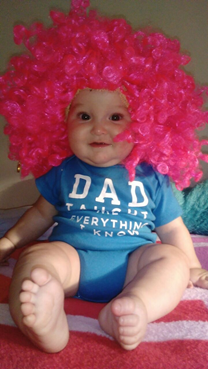
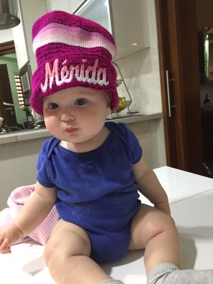
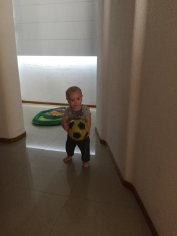
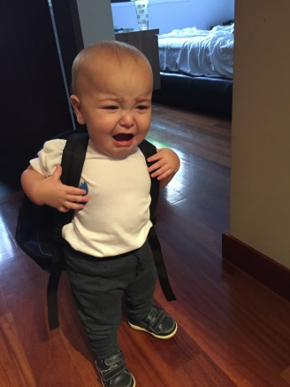
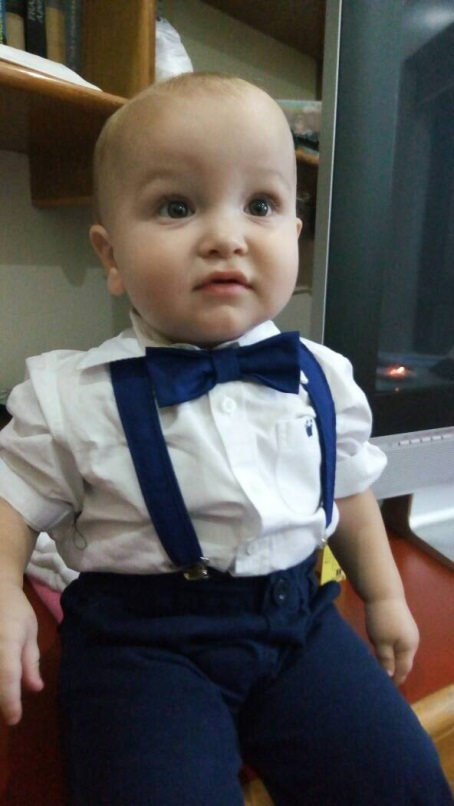
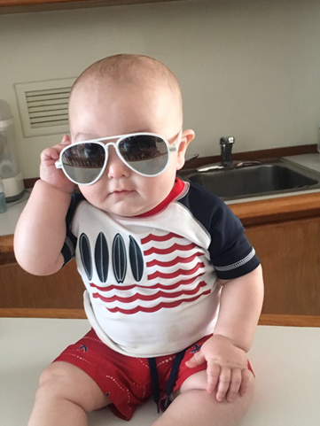

Mi
hermanito, Eli David Levy Cohen

Mi hermanito Eli nació el 27 de Julio del 2016. Es el amor de mi vida, estoy enamorada de él desde que nació.
El día miércoles 27 de Julio mi mamá fue al Brit del hijo de Akiva Bitkin. Ese día mi abuelo Arie se encontró en el evento a mi mamá y le dijo que quería monitorear los latidos del corazón del bebé. Lo que le pareció raro a mi mamá, pues mi abuelo, que es su obstetra, la había visto el día anterior y le dijo que todo estaba bien. Mi mamá tenía para ese entonces 38 semanas de gestación. Mi mamá como hija obediente fue y se monitoreó y al parecer todo iba bien y mi abuelo le hizo el tacto y le dijo que más o menos faltaban 10 días (lo que era raro, pues mi mamá la inducen siempre pasadas las 40 semanas, pues nunca había entrado en trabajo de parto). Al llegar a la casa, comienza a sentir dolores muy fuertes de vientre, los dejó pasar, hasta que no podía siquiera caminar del dolor. Estábamos mis hermanos y yo en la casa y no sabíamos qué hacer con los dolores de mi mamá. Llama mi mamá a mi papá y le pide que llegue rápido, pues siente muchos dolores y estaba sola con nosotros. Mi mamá había entrado en trabajo de parto, pero como nunca había experimentado eso (a pesar de haber parido cuatro veces anteriormente) no sabía porque se sentía tan mal. Mi papá llega y llama a mi abuelo, el cual explica que probablemente esté en trabajo de parto. Yo quería ir a la clínica para presenciar el nacimiento de mi hermanito, pero como era ya tarde de noche, mis padres no sabían a qué hora terminaría pariendo y no querían que saliera tan tarde de la clínica. Nos llevaron a casa de mi tía Frida y mis padres siguieron a la clínica.
Mi mamá cuenta que sufrió muchísimo en el parto, que la anestesia no le hizo el más mínimo efecto. Bueno a las 10:59 de la noche sale por fórceps mi hermanito y mi mamá dice que parecía un angelito, estaba blanquito y no lloró. En eso escucha a mi abuelo decir “esto es causal de muerte” y mi mamá sólo escuchó la palabra muerte, y como el bebé no lloraba ella pensó que mi abuelo dijo que estaba muerto. Gracias a D-os no fue así. Mi abuelo estaba sorprendido, porque había un nudo en el cordón umbilical y eso es causa de la muerte de muchos fetos. De hecho a él lamentablemente ya le había pasado. Mi abuelo le dijo a mis padre que si duraba un día más en el útero de mi madre probablemente hubiese muerte, pues no le hubiese podido pasar oxigeno o comida.
Por lo tanto mi hermanito es un milagro: D-os ocasionó que se adelantara el trabajo de parto de mi madre (cosa que no le había pasado en sus embarazos anteriores) para el angelito de mi hermano naciera, viniera a este mundo y viviera con nosotros. Mi mamá dice que él llegó a este mundo para hacer cosas grandes.
Su Brit se llevó a cabo ocho días después de su nacimiento como indica la Torah y recuerdo que ese día me comporté de manera muy malcriada con mi mamá. Primero ella había elegido a mi tía Frida para ser la persona que llevara al bebé al Sandak o mal llamado padrino. Pero yo me empeñé en que yo debía ser la primera en llevarlo, quitándole el protagonismo a mi tía. Y luego cuando dijeron en medio de la ceremonia el nombre de mi hermanito me puse a llorar y no paré de molestar a mi mamá por el nombre. Yo pensé que se llamaría Joseph David, pues mi mamá me contó que tuvo un sueño en el que su abuelo Paul (papá de su mamá) le pedía que lo llamara Joseph y David era porque es el personaje bíblico preferido de mi mamá. Yo no podía creer lo que mis oídos escuchaban cuando dijeron Eli David. Me puse bravísima con mi mamá por no cumplir con los deseos de mi bisabuelo.
Si se preguntan porque no le puso Joseph David, fue porque tres meses antes contrataron a un chofer que ayudaría a mi mamá pues se encontraba muy cansada y para sorpresa de mis padres se llamaba Joseph y mi mamá me explicó que no lo llamaría como al chofer. No tomaron esta decisión por razones despectivas, sintieron que era un mensaje de Hashem para que no lo llamaran de esa forma, pues cuantos choferes conocen que se llamen así.
Eli fue un bebé ejemplar, sólo comía y dormía. Mi mamá le daba pecho y mi hermana Vivi y yo nos encargábamos de sacarle los gases, cambiarle el pañal y tenerlo en nuestras manos constantemente. Para mi mamá fueron los mejores meses, recuerda que sólo le daba de comer y ella se dormía, ya que Vivi y yo nos encargábamos del resto.
Sus primeras vacaciones, fueron en diciembre a Puerto Azul y la verdad que dormía todo el día, a pesar de tener ya cuatro meses de edad, luego ese diciembre hicimos un viaje súper chévere a Mérida y Eli se portó espectacular, ni lo sentimos en todo el viaje.
Pasaron los meses y seguía siendo nuestro juguetico, hasta los ochomeses no se sentía de lo bien que se portaba. Hasta que comenzó a gatear y la verdad ya nos daba fastidio a mis hermanos y a mí perseguirlo por toda la casa, para que no le pasara nada. Luego comenzó a caminar a los 12 meses y ahí sí que menos queríamos estar con él, pues ha estado muy tremendo desde entonces.
Antes que empezara a hablar Eli se hacía entender perfectamente, el con su dedo lo decía todo. Finalmente comenzó a decir sus primeras palabras (más o menos alrededor de los 16 meses). Sus primeras palabras fueron: mami, Arie, Vivi, gol,eta (galleta), tota (torta), tete (tetero).
Le encantan las pelotas y su obsesión es el fútbol, le encanta patear las pelotas y ver el deporte en la tele. Mi mamá dice que aprendió a caminar porque le puso una pelota en frente y él la quería chutar. También le gustan los carritos.
Desde septiembre del 2017 está en Tip Tipot, ya que mi mamá comenzó a trabajar en el colegio y las horas que trabaja, lo deja en la guardería. Mi mamá dice que es horrible dejarlo, puessiempre lloracuando lo deja. Pero bueno todos pasamos por eso.
Eli David ha estado poco tiempo con nosotros pero desde que llegó a llenado nuestra vida de pura felicidad
 
Documentos